Parametric Design vs. Generative Design
By Charles Xie
Parametric design uses parameters and constraints to solve a design problem, while generative design applies algorithms to those same parameters to generate hundreds or thousands of possible design variations to review and choose from.
Parametric design is a design method where features (such as building elements and engineering components) are shaped according to algorithmic processes. In this method, parameters and rules determine the relationship between design intent and design response. The term parametric refers to input parameters fed into the algorithms.
Generative design is an AI-based genre of design technology inspired by biological evolution. Once the design criteria and constraints of a product are specified, generative design starts an evolutionary computation process that efficiently explores the entire parameter space supported by the software to find optimal solutions. During the iterative search for feasible solutions, the software automatically constructs a vast number of forms at each step, tests their functions using numerical simulations, evaluates their quality based on the given criteria and constraints, and then selects those that are closer to the goal for the next step. By repeating these computational routines many times, a variety of designs that meet the goal eventually emerge. Engineers then review these outputs, often with the aid of interactive visual analytics for intuitive appraisal and comparison across the board, and choose one or more designs for prototyping. This paradigm shift in design methods entails a fundamental change of mindset for design thinking that must be addressed in the engineering education of future workforce.
Aladdin aims to integrate AI deeply into CAD software to explore this new human-technology frontier. This article introduces the concept of visual evolutionary computation implemented in Aladdin based on genetic algorithms (GA), which is one of the most widely-used techniques in AI because of its simplicity (although Aladdin also provides another option for implementing bio-inspired evolutionary computation, namely the particle swarm optimization method, this article focuses mainly on GA for conceptual clarity). The embedded window below provides a simple example about finding the optimal tilt angle for a single row of solar panels aligned in the east-west axis, which may give you some basic ideas about this concept through observing its actions. To start, click the gray foundation under the solar panels first and then click the Run button that will then appear at the bottom of the graph window. After that, Aladdin will show you step by step how it arrives at the optimal solution through a sequence of structure generation and function evaluation procedures driven by evolutionary principles (e.g., genetic selection, crossover, and mutation). The graph will provide a visual representation of the entire process on the fly.
Live model above (view in full screen)
Not surprisingly, AI quickly nails the optimal solution in this simple case. The most productive tilt angle is close to the latitude, which, in this case, is a bit north to 42° (the location is set to near Boston, Massachusetts, USA). Note that the latitude degree is not necessarily the optimal degree for the tilt angle in other regions — it depends on other factors such as weather differences from season to season (e.g., an uneven distribution of rain or cloud across the year, such as the monsoon season in some parts of the world, may alter the weight factors). But this doesn't really matter to Aladdin designers as its comprehensive simulation engines used by AI to evaluate the objective function will automatically consider all these factors while searching for optimal solutions.
In the following sections, we will use a more complex application case to illustrate the power of this type of AI in generative design. This case involves multiple rows of solar panels, each of which is allowed to have a different tilt angle. The challenge is to find their values that result in maximal total output of electricity for a whole year from all the solar panels. You may have seen solar panel arrays in the real world that typically assume the same tilt angle for all the rows. Using an identical tilt angle for all rows makes sense when the inter-row spacing is sufficiently large such that a row does not cast shadow on the one behind it. But when the rows are more close-packed in order to use land more efficiently, the design challenge becomes more complicated, especially considering that the circuit wiring of the solar cells on each panel plays a significant role in the output.
Visualizing the design solution evolution driven by AI
Let's consider a design problem comprising four rows of solar panels that have all but their tilt angles determined. The four tilt angles form a design space with four independent dimensions. Each tilt angle is represented in GA as a "gene," with its value being a continuous number ranging from -90° (north-facing) to 90° (south-facing). A sequence that combines all the genes is referred to as a "chromosome." Each chromosome can be translated into an individual solution called a "phenotype," which represents an observable physical conformation of the four rows of solar panels. The following animation shows the evolution of design solutions driven by GA. The graph on the right also shows how GA explores the design space and converges to the final solution at the end of a run. The left axis of this biaxial graph represents the four tilt angles and the right axis the energy output of the best among all the solutions selected at each step of evolution, which is known as a generation in GA.
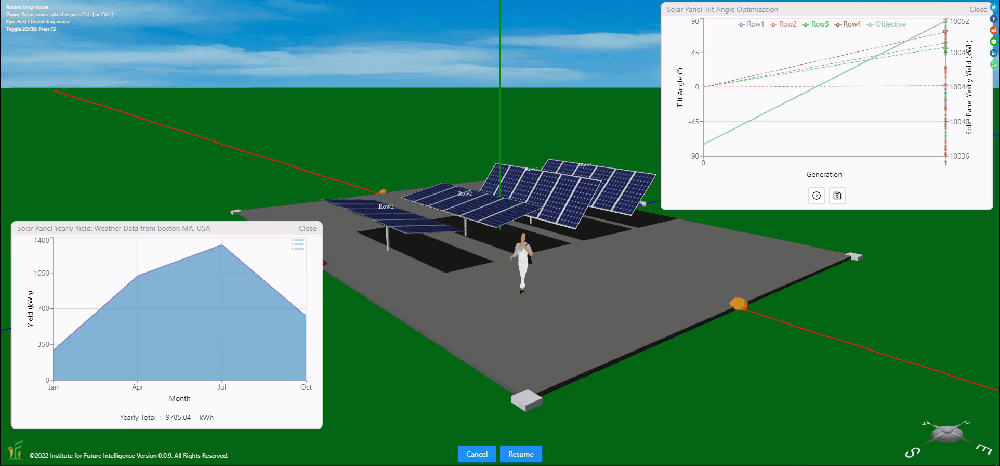
Visual evolutionary computation: An example of finding optimal tilt angles for four rows of solar panels
Click HERE to view and edit the above model
Enabling human-AI collaboration
We envision Aladdin as a design "buddy" that enables close human-AI collaboration to achieve some degree of collaborative intelligence. A minimum requirement to attain this goal is to support the seamless transition between human tasks and AI tasks (technically speaking, this demands the CAD software to fuse structural design and functional analysis capabilities in a single package to eliminate complicated scripting for tool chaining that most designers are not familiar or comfortable with). In Aladdin, users can always create or revise their own designs manually with the drawing tools provided on its 3D graphical user interface just like with a conventional CAD tool. When users are not sure about the performance level of their designs, they can then employ AI to assess, refine, or even change their designs — as if they asked a more experienced designer or teacher for help. When users invoke AI in this capacity, the current design will be automatically included in the first generation to kick off the evolution. In such a way, users' initial states are taken into consideration. Unless the starting design is already the global optimum, otherwise AI is guaranteed to generate better outcomes. The following images show the results and processes of two consecutive runs, with the first run starting from all the tilt angles being zero (i.e., face up for all the solar panels) and the second run starting from the final solution of the first one without any modification. As you can see, there is a significant improvement (from under 10,000 kWh to above 11,000 kWh) in the first run, but the improvement is much less in the second run (roughly 40 kWh of increase), which can be considered as fine-tuning.
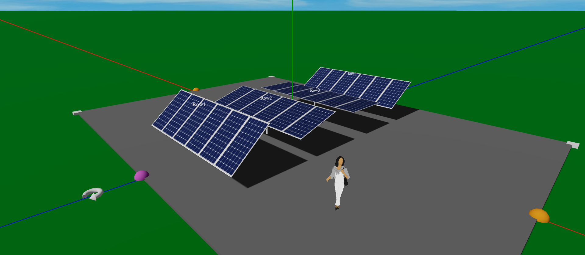
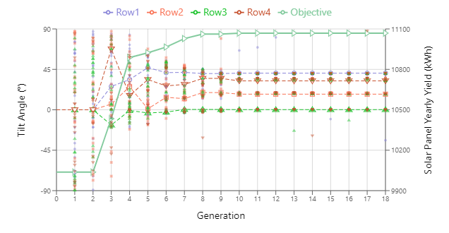
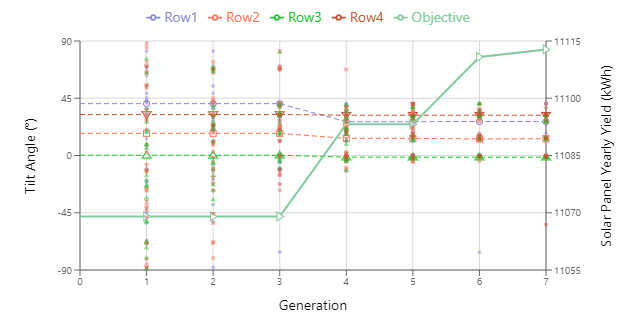
The evolution of design solutions in two consecutive runs
With this integrated human-AI capability at our fingertips, we can easily confirm that, given this inter-row spacing between adjacent solar panel rows, the optimal tilt angle obtained for a single row of solar panels without considering inter-row shadowing is no longer optimal. The following shows the difference in electricity outputs when we choose that tilt angle (~42°) to be the starting point for all the solar panels and "ask" AI to come up with a better solution. The following images show the comparison of the results. Note that, to speed up the evolution, we only sample four days from different seasons (1/22, 4/22, 7/22, and 10/22) to represent the whole year. This simplification should not affect the conclusions qualitatively. More days can be included if a higher accuracy is needed.
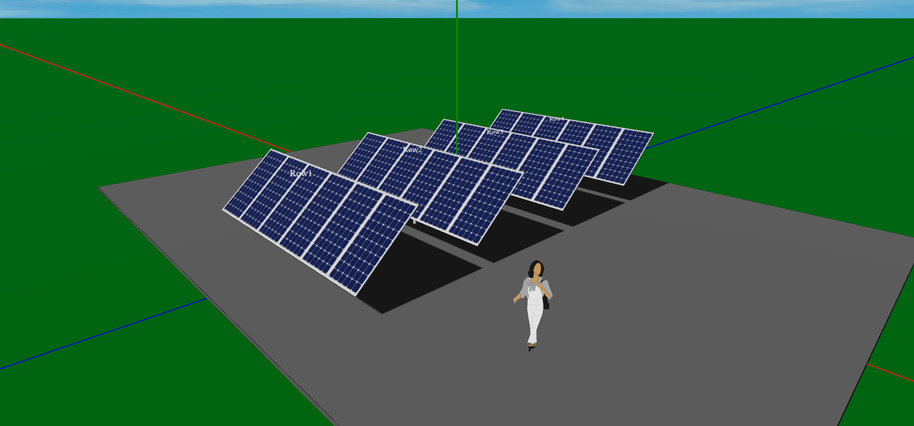
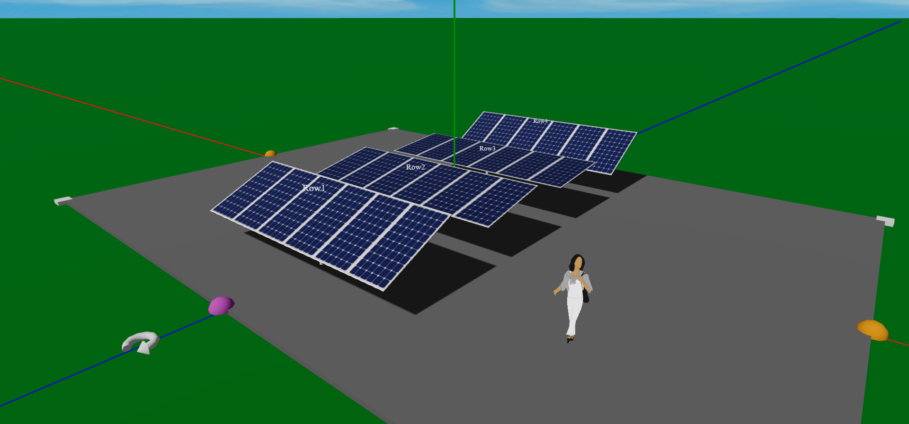
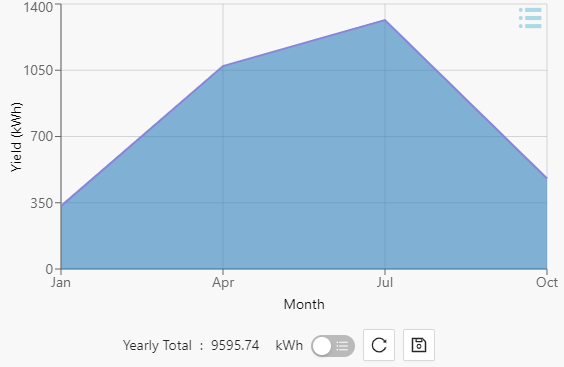
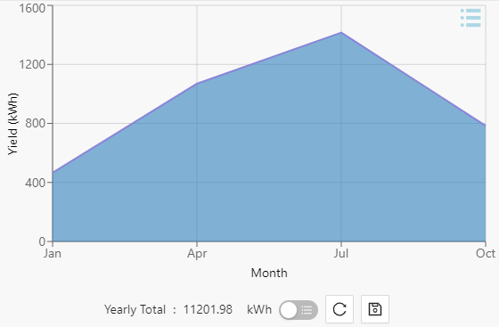
Evolving from an initial design that uses 42° for all the tilt angles
Visualizing the design space exploration driven by AI
Design space exploration is an important concept in design theories and practices. As humans, we tend to fixate on certain areas in the design space that seem familiar to us. However, our experience is a double-edged sword — while it allows us to do our job quickly, it also limits our ability to see beyond what we already know. AI has a similar creativity problem — an algorithm may be self-reassured to stick to a local optimum due to its interpolative nature stemming from machine learning. To overcome this trap, GA uses a mutation operator that randomizes the "genes" of some randomly-selected solutions during the process of evolution. The following images show the effect of this mutation operator in surveying the design space. The small dots in each biaxial plot represent all the individual solutions that have been generated at each step of evolution. Their distribution in the vertical direction at each step represents their "genetic" diversity. As you can see from these images, when the mutation rate is low, the "genes" incline to concentrate on a few spots after a few generations. When the mutation rate is high, they become much more scattered, though a higher degree of diversity does not seem to significantly improve the results in these particular runs (possibly because the fitness landscape is relatively flat in this design space).
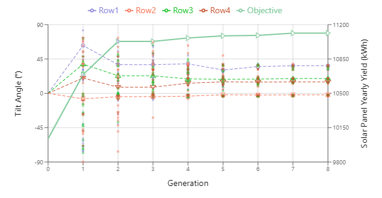
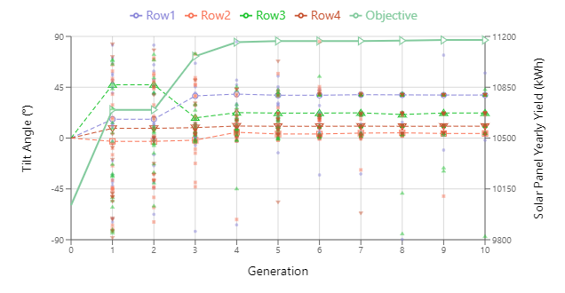
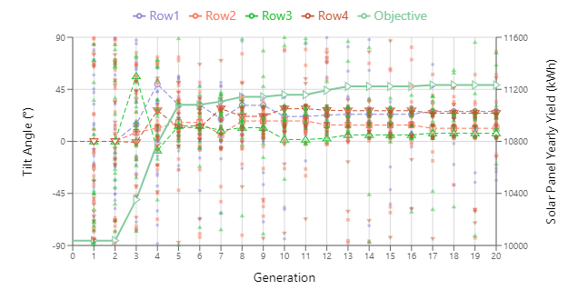
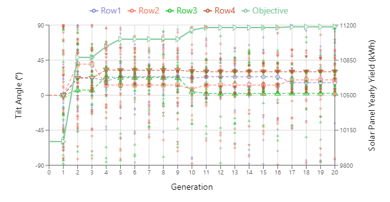
The effect of the mutation rate on evolution (Upper-left: 0%, upper-right: 30%, lower-left: 70%, lower-right: 100%)
Discussion
We believe that the best strategy of using AI in design is not in complete automation. Rather, a symbiosis between human and AI may be more likely to be practical and persistent. After all, the goal of design is to address the needs of humans and humans should always be part of the loop. Aladdin provides a research platform for us to imagine that future. In particular, the work that we are undertaking is potentially important to the development of explainable artificial intelligence (XAI) as the visualization of how AI solves a problem can open the "black box" to increase its trustworthiness. And humans' understanding of and trust in AI are vital to the envisioned symbiosis.